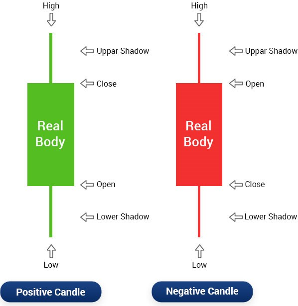

Projet MOSAIC : Notions fondamentales
Table des matières
1. Introduction
Dans le domaine de l'analyse des marchés financiers, l'analyse technique correspond à un ensemble d'outils dont le but est de prédire les rendements futurs des actifs financiers. Les analyses reposent sur l'étude des historiques des données de marché disponibles, principalement la cotation et le volume des actifs considérés.
La grande majorité des méthodologies présentées reposent sur la construction d'indicateurs particuliers jugés pertinents par leurs auteurs. Toutefois, l'évaluation de ces indicateurs n'est réalisée que sur la base de backtesting empiriques sur des périodes choisies arbitrairement et relativement courtes lorsqu'il s'agit d'analyses intra-journalières. Comme les auteurs de l'article [1], nous partageons le constat que l'évaluation des performances de l'analyse technique nécessite une consolidation mathématique. Pour ce faire, nous proposons de développer une stratégie d'évaluation des indicateurs techniques innovante fondée sur l'analyse de la distribution conditionnelle des rendements par rapport aux indicateurs observés.
Ce document a pour objectif de présenter notre démarche de développement et d'évaluation d'indicateurs techniques pour l'analyse technique des cryptoactifs.
2. Données historiques OHLCV
L'évolution de la cotation d'un actif au cours du temps est usuellement présentée sous la forme de données, dites au format OHLCV (de l'anglais open, high, low, close, volume). Il s'agit d'un format pratique permettant de représenter des séries temporelles d'une manière particulière. En effet, le format OHLC (la partie volume n'est pas concernée par la subtilité du format) représente l'évolution d'une mesure au cours d'intervalles de temps réguliers successifs caractérisés par une période d'échantillonnage notée \(\Delta t\) (e.g. une minute, cinq minutes, une heure, une journée, etc).
Typiquement, les données OHLCV contiennent les variables suivantes :
timestamp: timestamp caractérisant le début \(t\) de l'intervalle de mesure (par exemple exprimé en millisecondes ou au format ISO), l'instant de fin de l'intervalle étant égal à \(t + \Delta t\).open: valeur de l'actif au début de l'intervalle.high: valeur maximum de l'actif atteinte sur l'intervalle.low: valeur mimimum de l'actif atteinte sur l'invervalle.close: valeur de l'actif à la fin de l'intervalle.volume: montant cumulé des ventes et des achats de l'actif sur l'intervalle.
Il est courant de visualiser les données OHLC à l'aide du graphique, dit en chandeliers. En fonction, des valeurs d'ouverture (open) et de fermeture (close), on parle également de chandeliers haussiers et baissiers, cf. Figure 1.

Figure 1 : Représentation du symbole de chandelier.
Dans un diagramme en chandelier, on retrouve les données OHLC mais également les notions de :
- corps (body) représentant la distance entre la cotation d'ouverture et de fermeture de l'actif sur un intervalle de temps ;
- mèches ou ombres supérieures (upper shadow) représentant la distance entre la partie haute du corps et la cotation la plus haute sur un intervalle de temps ;
- mèches ou ombres inférieures (lower shadow) représentant la distance entre la partie basse du corps et la cotation la plus basse sur un intervalle de temps ;
Le tableau suivant donne un aperçu des premières données de cotation du BTC par rapport à l'USDC de l'année 2021 avec une période d'échantillonnage \(\Delta t =\) 5 minutes.
| timestamp | open | high | low | close | volume | |
|---|---|---|---|---|---|---|
| datetime | ||||||
| 2021-01-01 01:00:00+01:00 | 1 609 459 200 000 | 28 964.54 | 29 064.55 | 28 958.66 | 29 018.17 | 8.77 |
| 2021-01-01 01:05:00+01:00 | 1 609 459 500 000 | 28 993.74 | 28 996.04 | 28 890.99 | 28 914.30 | 11.15 |
| 2021-01-01 01:10:00+01:00 | 1 609 459 800 000 | 28 902.53 | 28 908.49 | 28 741.86 | 28 790.00 | 4.58 |
| 2021-01-01 01:15:00+01:00 | 1 609 460 100 000 | 28 798.99 | 28 891.63 | 28 798.29 | 28 884.38 | 4.31 |
| 2021-01-01 01:20:00+01:00 | 1 609 460 400 000 | 28 845.04 | 28 886.67 | 28 789.15 | 28 885.73 | 13.21 |
Par exemple, la première ligne du tableau signifie que le 01/01/2021 :
- à 01:00:00, le prix d'un BTC était de 28964,54 USDC ;
- à 01:05:00, le prix d'un BTC était entre 29018,17 USDC (fermeture de l'intervalle) et 28993,74 USDC (ouverture de l'intervalle suivant) ;
- entre 00:00:00 et 00:05:00 le prix d'un BTC est passé par un minimum 28958,66 USDC et un maximum de 29064,55 USDC.
Le marché BTC/USDC étant ouvert 24h/24 et 7j/7, nous devrions observer \(\text{close}(t-1)\) égale à \(\text{open}(t)\) pour tout \(t\). Toutefois, la collecte des données n'étant pas instantanée, il est fréquent d'observer de légères différences entre le cours d'ouverture de l'intervalle de temps courant et le cours de fermeture de l'intervalle précédent.
3. Notations mathématiques
3.1. Notions temporelles
Nous avons introduit précédemment la période d'échantillonnage des données \(\Delta t\). On note également \(t_{0}\) la première date d'échantillonnage. Dans l'exemple de données précédent, on rappelle que \(\Delta t = 5\) minutes et que \(t_{0} =\) 2021-01-01 01:00:00.
Chaque intervalle de temps est alors repéré par l'instant qui marque le début de l'intervalle. L'intervalle \(t\) désigne donc l'intervalle de temps qui commence à l'instant \(t\) et se termine à l'instant \(t + \Delta t\) (cf. Figure 2).
Afin de se repérer relativement à un intervalle \(t\) donné dans le cas d'un échantillonnage de période \(Delta t\), on désigne par intervalle \(t + k\), où $k est un entier relatif, l'intervalle débutant à l'instant \(t + k \Delta t\) et s'achevant à l'instant \(t + (k + 1) \Delta t\)
En reprenant l'exemple précédent, on a :
- l'intervalle \(t_{0}\) entre 2021-01-01 01:00:00 et 2021-01-01 01:05:00 ;
- l'intervalle \(t_{0} + 4\) entre 2021-01-01 01:20:00 et 2021-01-01 01:25:00.

Figure 2 : Notion d'intervalle sur les données OHLCV.
Les données OHLCV sont notées dans la suite comme suit :
- \(\text{o}_{t}\) : cotation de l'actif à l'ouverture de l'intervalle \(t\) ;
- \(\text{c}_{t}\) : cotation de l'actif à la fermeture de l'intervalle \(t\), autrement dit cotation de l'actif à l'instant \(t + \Delta t\) ;
- \(\text{h}_{t}\) : cotation maximum de l'actif sur l'intervalle \(t\) ;
- \(\text{l}_{t}\) : cotation mimimum de l'actif sur l'intervalle \(t\) ;
- \(\text{v}_{t}\) : volume échangé de l'actif sut l'intervalle \(t\).
3.2. Chandelier
En plus des notations précédentes, nous pouvons introduire différentes grandeurs associées aux parties du diagramme en chandelier.
En considérant, le chandelier représentant une donnée OHLC sur l'intervalle \(t\), nous avons :
- Le corps \(\text{b}_{t} = \text{c}_{t} - \text{o}_{t}\).
- L'ombre inférieure \(\text{s}_{t}^{\ell} = \min\{\text{c}_{t}, \text{o}_{t}\} - \text{l}_{t}\).
- L'ombre supérieure \(\text{s}_{t}^{u} = \text{h}_{t} - \max\{\text{c}_{t}, \text{o}_{t}\}\).
3.3. Rendements
On note enfin \(r_{t}\) la variation relative de la cotation d'un actif entre deux intervalles consécutif, on parle également de rendement (ou returns en anglais) sur l'intervalle \(t\). Nous avons donc pour tout \(t\) :
\begin{equation} \label{orgcaba803} r_{t} = \frac{\text{c}_{t}}{\text{c}_{t - 1}} - 1. \end{equation}La quantité \(r_{t}\) est donc positive si l'actif gagne de la valeur sur l'intervalle \(t\) et négative sinon. Le rendement représente l'indicateur principal au coeur de toutes les analyses financières réalisées sur un actif donnée.
4. Extension de la notion de rendements
4.1. Définitions
Le calcul des rendements est une étape fondamentale dans l'analyse d'un actif au cours du temps. La définition d'un rendement proposée dans la section précédente se limite au rendement sur le cours de clôture et uniquement entre deux intervalles de temps successifs.
En effet, nous allons étendre la définition des rendements :
- d'une part, aux cotations maximum et minimum ;
- et d'autre part, entre deux intervalles de temps \(t\) et \(t + k\) donnés.
Dans les paragraphes suivants, nous illustrerons les différentes rendements sur l'extrait de cotation BTC/USDC suivant.
4.2. Rendement de clôture
Commençons donc par définir le rendement de clôture entre deux intervalles \(t\) et \(t+k\) (cf. Figure 3) comme suit :
\begin{equation} \rho^{\text{c}}_{t + k} = \begin{cases} \frac{\text{c}_{t + k}}{\text{c}_{t-1}} - 1 & \quad k \ge 0 \\ \frac{\text{c}_{t }}{\text{c}_{t + k - 1}} - 1 & \quad k < 0. \end{cases} \end{equation}À noter que \(k\) est un nombre entier permettant de définir le nombre d'intervalles futurs ou passés à prendre en compte pour le calcul du rendement.

Figure 3 : Illustration graphique du calcul d'un rendement de clôture.
Exemples
Rendements de clôture calculés sur les données de l'exemple précédent et sur différents horizons :
| period | -3 | -2 | -1 | 0 | 1 | 2 | 3 |
|---|---|---|---|---|---|---|---|
| datetime | |||||||
| 2021-01-01 01:00:00+01:00 | |||||||
| 2021-01-01 01:05:00+01:00 | -0.358% | -0.786% | -0.461% | -0.456% | |||
| 2021-01-01 01:10:00+01:00 | -0.786% | -0.430% | -0.103% | -0.099% | |||
| 2021-01-01 01:15:00+01:00 | -0.461% | -0.103% | 0.328% | 0.333% | |||
| 2021-01-01 01:20:00+01:00 | -0.456% | -0.099% | 0.333% | 0.005% |
En prenant l'instant \(t\) = 2021-01-01T00:05:00 et un horizon \(k = 0\), le rendement de clôture \(\rho^{\text{c}}_{t} = r_{t}\) correspond au rapport entre la clôture de l'intervalle débutant à la date 2021-01-01T01:05:00 et la clôture de l'intervalle précédent (2021-01-01T01:00:00), soit : \[ \rho^{\text{c}}_{t} = \frac{\text{c}_{t}}{\text{c}_{t-1}} = \frac{28914.30}{29018.17} - 1 \simeq -0.003579 \simeq -0.358 \% \]
En prenant l'intervalle à \(t\) = 2021-01-01T00:10:00 et un horizon \(k = 2\), le rendement de clôture \(\rho^{\text{c}}_{t+2}\) correspond au rapport entre la clôture de l'intervalle 2021-01-01T01:20:00 et la clôture de l'intervalle 2021-01-01T01:05:00, soit : \[ \rho^{\text{c}}_{t + 2} = \frac{\text{c}_{t+2}}{\text{c}_{t-1}} = \frac{28885.73}{28914.30} - 1 \simeq -0.000988 \simeq -0.099 \% \]
En prenant l'intervalle \(t\) = 2021-01-01T01:20:00 et un horizon \(k = -3\), le rendement de clôture \(\rho^{\text{c}}_{t-3}\) correspond au rapport entre la clôture de l'intervalle 2021-01-01T01:20:00 et la clôture de l'intervalle 2021-01-01T01:00:00, soit : \[ \rho^{\text{c}}_{t - 3} = \frac{\text{c}_{t}}{\text{c}_{t-4}} = \frac{28885.73}{29018.17} - 1 \simeq -0.00456 \simeq -0.456 \% \]
Propriété
Le rendement de clôture entre les intervalles \(t\) et \(t + k\), noté \(\rho^{\text{c}}_{t + k}\), s'exprime en fonction des rendements \(r_{t}, \ldots, r_{t+k}\) (cf. Équation \eqref{orgcaba803}) comme suit :
\begin{equation} \rho^{\text{c}}_{t + k} = \prod_{i = 1}^{k} (r_{t + i} + 1) - 1 \end{equation}Ce résultat classique s'obtient en remarquant que :
\begin{align} \rho^{\text{c}}_{t + k} + 1 & = \frac{\text{c}_{t + k}}{\text{c}_{t-1}} \\ & = \frac{\text{c}_{t}}{\text{c}_{t - 1}} \frac{\text{c}_{t + 1}}{\text{c}_{t}} \ldots \frac{\text{c}_{t + k}}{\text{c}_{t + k - 1}} \\ & = (r_{t} + 1) (r_{t+1} + 1) \ldots (r_{t+k} + 1) \end{align}4.3. Rendement du maximum et du minimum
Le rendement du maximum entre deux intervalles \(t\) et \(t+k\) (cf. Figure 4) est défini par :
\begin{equation} \rho^{\text{h}}_{t + k} = \begin{cases} \frac{\max_{t \le i \le t + k}\text{h}_{i}}{\text{c}_{t-1}} - 1 & \quad k \ge 0 \\ \frac{\max_{t - k \le i \le t}\text{h}_{i}}{\text{c}_{t + k - 1}} - 1 & \quad k < 0. \end{cases} \end{equation}
Figure 4 : Illustration graphique du calcul d'un rendement du maximum.
Et par analogie, on définit le rendement du minimum entre deux intervalles \(t\) et \(t+k\) (cf. Figure 5) :
\begin{equation} \rho^{\text{l}}_{t + k} = \begin{cases} \frac{\min_{t \le i \le t + k}\text{h}_{i}}{\text{c}_{t-1}} - 1 & \quad k \ge 0 \\ \frac{\min_{t - k \le i \le t}\text{h}_{i}}{\text{c}_{t + k - 1}} - 1 & \quad k < 0. \end{cases} \end{equation}
Figure 5 : Illustration graphique du calcul d'un rendement du minimum.
Exemples
Rendements du maximum calculés sur les données de l'exemple précédent et sur différents horizons :
Rendements du minimum calculés sur les mêmes horizons :
En prenant l'intervalle \(t\) = 2021-01-01T01:05:00 et un horizon \(k = 0\), le rendement du maximum \(\rho^{\text{h}}_{t} = r_{t}\) correspond au rapport entre la cotation maximum de l'intervalle 2021-01-01T01:05:00 et la clôture de l'intervalle 2021-01-01T01:00:00, soit : \[ \rho^{\text{h}}_{t} = \frac{\text{h}_{t}}{\text{c}_{t-1}} = \frac{28996.04}{29018.17} - 1 \simeq -0.000762 \simeq -0.076 \% \]
Le rendement du minimum correspondant est : \[ \rho^{\text{l}}_{t} = \frac{\text{l}_{t}}{\text{c}_{t-1}} = \frac{28890.99}{29018.17} - 1 \simeq -0.00438 \simeq -0.44 \% \]
En prenant l'intervalle \(t\) = 2021-01-01T01:10:00 et un horizon \(k = 2\), le rendement du maximum \(\rho^{\text{h}}_{t+2}\) correspond au rapport entre la cotation maximum entre les intervalle 2021-01-01T01:10:00 et 2021-01-01T01:20:00, et la clôture de l'intervalle 2021-01-01T01:05:00, soit : \[ \rho^{\text{h}}_{t + 2} = \frac{\max\{\text{h}_{t}, \text{h}_{t+1}, \text{h}_{t+2}\}}{\text{c}_{t-1}} = \frac{\text{h}_{t}}{\text{c}_{t-1}} = \frac{28908.49}{28914.30} - 1 \simeq -0.000201 \simeq -0.02 \% \]
Le rendement du minimum correspondant est : \[ \rho^{\text{l}}_{t + 2} = \frac{\max\{\text{l}_{t}, \text{l}_{t+1}, \text{l}_{t+2}\}}{\text{c}_{t-1}} = \frac{\text{l}_{t}}{\text{c}_{t-1}} = \frac{28741.86}{28914.30} - 1 \simeq -0.00596 \simeq -0.59 \% \]
En prenant l'intervalle \(t\) = 2021-01-01T01:20:00 et un horizon \(k = -3\), le rendement du maximum \(\rho^{\text{h}}_{t-3}\) correspond au rapport entre la cotation maximum entre les intervalles 2021-01-01T01:05:00 et 2021-01-01T01:20:00, et la clôture de l'intervalle 2021-01-01T01:00:00, soit : \[ \rho^{\text{h}}_{t - 3} = \frac{\max\{\text{h}_{t-3}, \text{h}_{t-2}, \text{h}_{t-1}, \text{h}_{t}\}}{\text{c}_{t-4}} = \frac{\text{h}_{t-3}}{\text{c}_{t-4}} = \frac{28996.04}{29018.17} - 1 \simeq -0.000762 \simeq -0.076 \% \]
Le rendement du minimum correspondant est : \[ \rho^{\text{l}}_{t - 3} = \frac{\max\{\text{l}_{t-3}, \text{l}_{t-2}, \text{l}_{t-1}, \text{l}_{t}\}}{\text{c}_{t-4}} = \frac{\text{l}_{t-2}}{\text{c}_{t-4}} = \frac{28741.86}{29018.17} - 1 \simeq -0.00952 \simeq -0.95 \% \]
5. Environnement technique
Les librairies Python utilisées dans les traitements présentés dans ce document sont :
| Library | Version |
|---|---|
| MOSAIC | 0.0.33 |